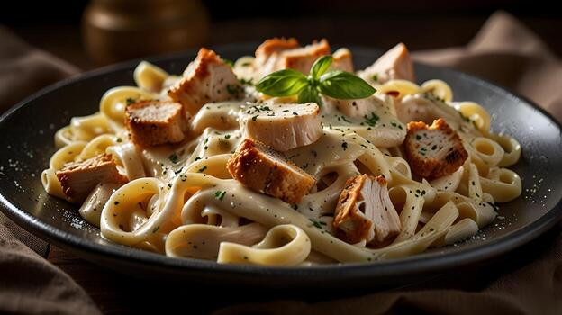

Prep: 10 min | Cook: 20 min | Serves: 2 | Difficulty: Easy

Boil a large pot of salted water. Add the fettuccine pasta and cook according to the packet instructions (usually 10-12 minutes) until al dente. Reserve 1 cup of pasta water before draining.
In a wide pan, melt the butter over medium heat. Add the minced garlic and sauté for about 1 minute until fragrant. Do not let the garlic brown.
Pour in the heavy cream and bring to a gentle simmer. Stir continuously for 2-3 minutes until the cream slightly thickens.
Reduce the heat to low and gradually add the grated parmesan cheese, stirring constantly so it melts smoothly into the sauce without clumping.
Add the drained pasta to the sauce and toss well to coat every strand. If the sauce is too thick, add a splash of the reserved pasta water and toss again.
Season with salt and black pepper. Serve immediately on warm plates, garnished with chopped fresh parsley and extra parmesan on top. Enjoy!